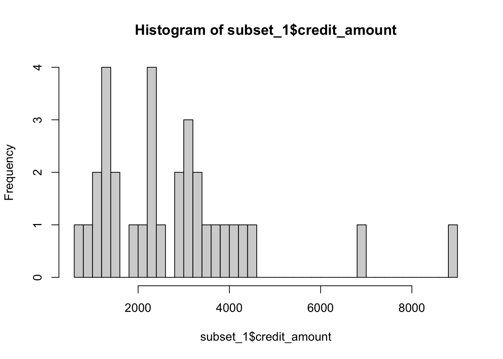
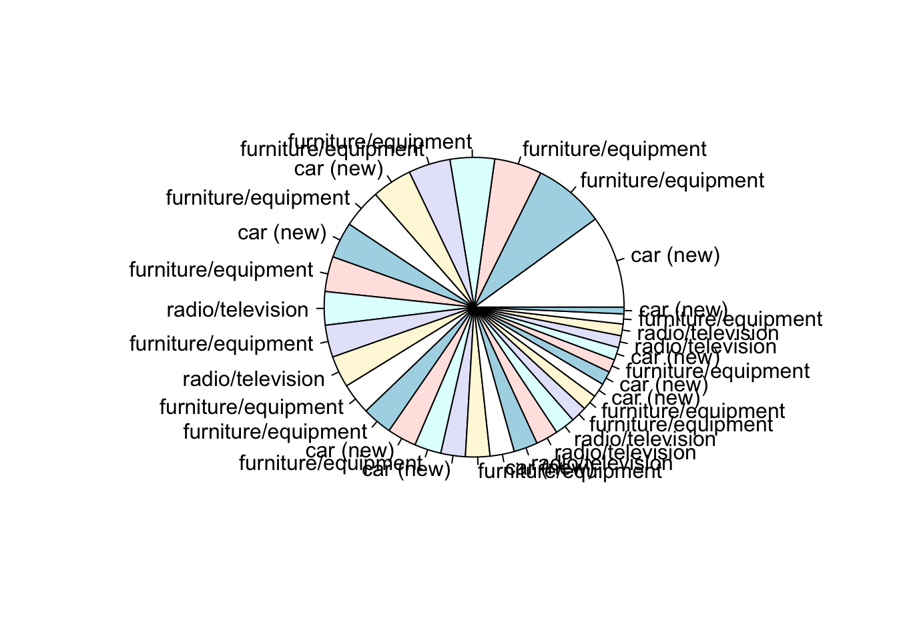
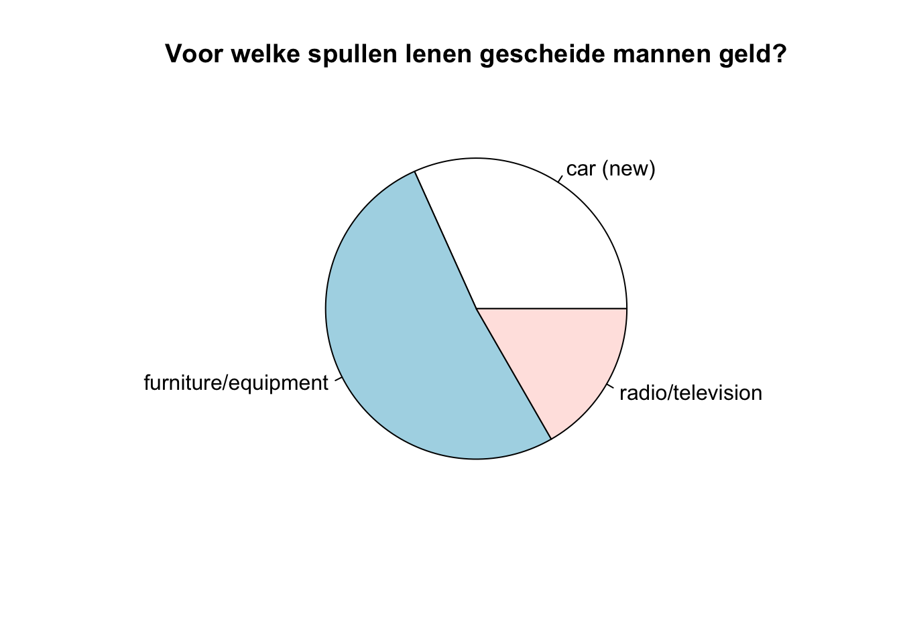
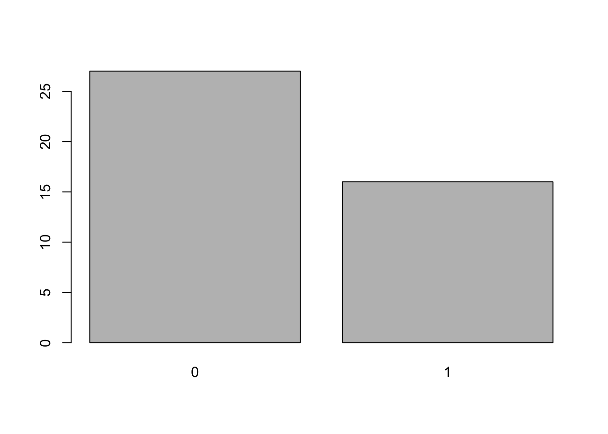
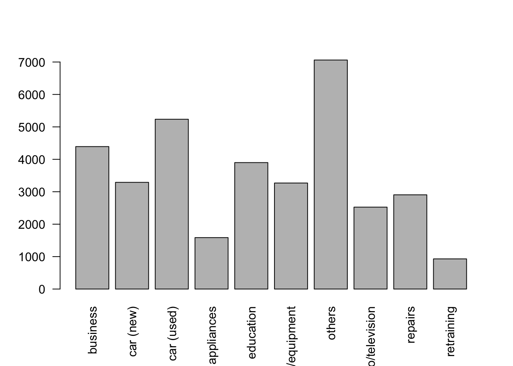
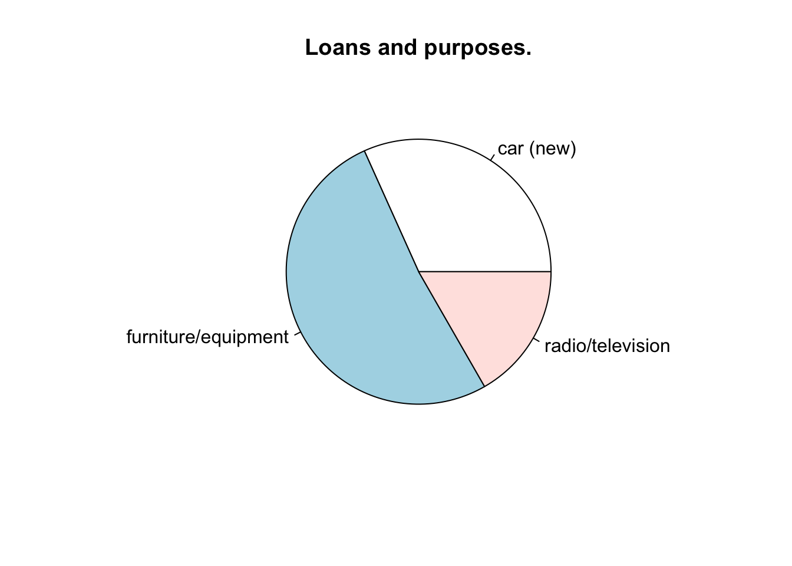

3 Data analyseren met het dplyr package
Cheatsheet aanwezig
Packages installeren in R:
install.packages('dplyr')Package inladen met library()
library(dplyr)##
## Attaching package: 'dplyr'## The following objects are masked from 'package:stats':
##
## filter, lag## The following objects are masked from 'package:base':
##
## intersect, setdiff, setequal, unionBase R:
older_30 <- data[data$age_years >= 30,]
older_30 <- older_30[, c("age_years", "personal_status_sex", "credit_amount")]
older_30 <- older_30[sort(older_30$age_years),]Dplyr:
older_30_2 <- data %>%
filter(age_years >= 30) %>%
select(age_years, personal_status_sex, credit_amount) %>%
arrange(age_years)
head(older_30_2)## # A tibble: 6 × 3
## age_years personal_status_sex credit_amount
## <dbl> <chr> <dbl>
## 1 30 male : single 5866
## 2 30 male : single 2333
## 3 30 male : single 5965
## 4 30 female : divorced/separated/married 8133
## 5 30 male : single 2249
## 6 30 female : divorced/separated/married 7721Voorbeeld:
- Alleen gescheiden mannen
- Alleen leeftijd minimaal 18
- Alleen voor een
"car (new)","radio/television","furniture/equipment"als reden: - Alleen de kolommen selecteren (in de volgorde):
"age_years""duration_months""credit_amount""purpose""response"
- Gesorteerd op
"credit_amount"van hoog naar laag
Eerst verzamelen:
selected_purposes <- c("car (new)", "radio/television", "furniture/equipment")
subset_1 <- data %>%
select(age_years, duration_months, credit_amount, purpose, personal_status_sex, response) %>%
filter(personal_status_sex == "male : divorced/separated") %>%
filter(age_years >= 18) %>%
filter(purpose %in% selected_purposes) %>%
arrange(desc(credit_amount))3.1 Visualizations
hist(subset_1$credit_amount, breaks = 30)
pie(subset_1$credit_amount, labels = subset_1$purpose)
Dat gaat niet helemaal goed…
Groeperen:
subset_1_grouped <- subset_1 %>%
group_by(purpose) %>%
summarize(total_amount = sum(credit_amount))pie(subset_1_grouped$total_amount, labels = subset_1_grouped$purpose, main = "Voor welke spullen lenen gescheide mannen geld?")
Challenge:
Voorbeeld met dplyr. Gewenste dataset:
* Alleen vrouwen (gescheiden, getrouwd, single)
* Alle leeftijden
* Alleen voor een "education", "retraining" "business", "other" als reden:
* Alleen de kolommen selecteren (in de volgorde):
* "age_years"
* "personal_status_sex"
* "credit_amount"
* "purpose"
* "response"
* Gesorteerd op "age_years" aflopend
- Visualiseren de verhouding dat deze vrouwen hun lening uiteindelijk hebben terugbetaald (
"response")
selected_purposes <- c("education", "retraining", "business", "other")
subset_2 <- data %>%
filter(personal_status_sex == "female : divorced/separated/married") %>%
filter(purpose %in% selected_purposes) %>%
select(age_years, duration_months, credit_amount, purpose, response) %>%
arrange(desc(age_years))barplot(table(subset_2$response))
Challange: Een staafdiagram apart voor alle mannen en alle vrouwen die laat zien waar gemiddeld het meeste geld voor wordt geleend:
Zelf interessante bevindingen zoeken en daarna weergeven. Zijn vragen die je kan krijgen: “Kun je opvallende zaken vinden in deze dataset?”
manvrouw <- data %>%
mutate(geslacht = ifelse(personal_status_sex != "female : divorced/separated/married", "man", "vrouw")) %>%
select(geslacht, purpose, credit_amount) %>%
group_by(geslacht, purpose) %>%
summarise(mean_amount = mean(credit_amount)) ## `summarise()` has grouped output by 'geslacht'. You can override using the `.groups` argument.manvrouw## # A tibble: 20 × 3
## # Groups: geslacht [2]
## geslacht purpose mean_amount
## <chr> <chr> <dbl>
## 1 man business 4393.
## 2 man car (new) 3290.
## 3 man car (used) 5235.
## 4 man domestic appliances 1586.
## 5 man education 3899.
## 6 man furniture/equipment 3269.
## 7 man others 7061.
## 8 man radio/television 2526.
## 9 man repairs 2905.
## 10 man retraining 930
## 11 vrouw business 3195.
## 12 vrouw car (new) 2532.
## 13 vrouw car (used) 5814.
## 14 vrouw domestic appliances 1410.
## 15 vrouw education 2188.
## 16 vrouw furniture/equipment 2775.
## 17 vrouw others 11654.
## 18 vrouw radio/television 2401.
## 19 vrouw repairs 2126.
## 20 vrouw retraining 1758.manset <- manvrouw %>% filter(geslacht=="man")
vrouwset <- manvrouw %>% filter(geslacht=="vrouw")
mannen_amounts <- manset$mean_amount
names(mannen_amounts) <- manset$purpose
vrouwen_amounts <- vrouwset$mean_amount
names(vrouwen_amounts) <- vrouwset$purposebarplot(mannen_amounts, las=2)
barplot(vrouwen_amounts, las=2)